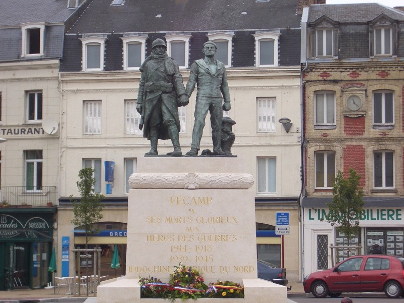
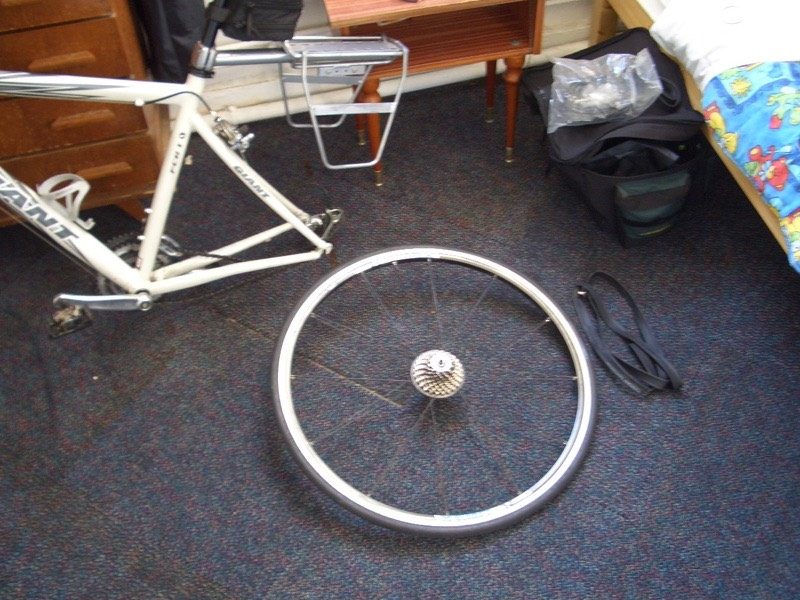

昨晚睡覺之前，在大大的浴缸中泡了舒服的熱水澡，疲勞全部消散一空。
一覺醒來，外頭又在飄毛毛雨，電視新聞正在播報氣象，法國北部都是降雨的。
看來今天也會相當的苦命了....昨天遊記寫完之後，窗口的無線網路訊號居然消失了？
離開昂貴但很舒適的旅館，牽著FCR1手拿iBook在街上找訊號，
這幾天，當我騎著車大包小包的經過，法國人也不會多看你一眼，大概看太多了吧。
但我僅僅是把iBook拿出來，居然引起了路人的側目圍觀，還對著我品頭論足。
歐吉桑還用法語問我一些事情，可是我完全聽不懂呀∼
找到訊號之後，就在路邊把24日的遊記給上傳。
今天是第九天開始了∼若要用一句話來總括今天，那就是『糟糕透頂』。
一大早的毛毛雨就讓我有點悶，昨天明明到迪耶普的時候是超好的天氣呀，
怎麼睡一覺全變了？難道雨雲跟著我跑嗎？
再來跟下雨一樣令人討厭的，就是沿路都刮起了強烈的逆風。
像是跟我作對一樣，我往北，強風從由北往南吹，我右轉，強風也跟著轉向。
永遠都是對著我直直的吹過來，騎起車來無比的痛苦。
下坡跟平路沒兩樣，不用力踩踏板的話，車子還滑不太動。
更不用提平路了，騎起來簡直是陡坡呀！腳踩的那麼用力，酸的要命，
時速永遠在15公里左右徘徊，車速一點都快不起來，人也快樂不起來....
今天的路線是沿著D925移動，經過FECAMP後，到達哈佛爾。
早餐在超級市場買兩個奶油派打發掉了，2.2歐元。
十點吃一個，下午一點再吃一個，味道挺不賴的∼高甜度也高熱量。
從迪耶普騎了約70公里到達FECAMP，再從FECAMP騎45公里到哈佛爾。

雨時下時停，不下的時候，就把雨衣塞在車子後面，一下起雨就馬上拿出來穿。
今天我第一次在路上生氣了，就是因為逆風的關係，騎車騎的很不爽。
平路像爬坡，而整路上都是爬坡，騎起來超累，換成平時，爬坡爬到頂之後，
就會有下坡可以緩衝一下，一路滑下去通體舒暢∼
但逆風就不是這麼一回事了，好不容易爬到波頂，車子看到下坡像不認識一樣，
不踩踏板它還不動，完全被風給吃的死死的，感覺爬了一百多公里的上坡路，疲憊不堪。
繼昨天前輪爆胎之後，今天很公平的換後輪爆胎了，深深的嘆了一口氣，又在路邊換起胎來。
猜想問題大概不出在內胎上，而是外胎太脆弱了，抵擋不住法國原始風味的道路。
跑車的光頭胎，騎沒幾天已是傷痕累累，肉眼可見已佈滿了許多小洞跟刮傷。
輪胎表面的紋路已經磨損的差不多了，莫非壽命已盡？
可我只帶了一條外胎來替換，再說如果可以的話，我比較想換越野車的車胎。
雖然騎起車還費力了些，但對於惡劣路況的承受度比跑車胎好上太多。
五條內胎瞬間用掉了三條，要是看到腳踏車店，一定要進去補充內胎。
下午無聊的時候，拿出了果醬直接吃了起來，果醬是從20歐元的旅館早餐中拿的。
拿了三種口味∼想說如果買了麵包的話就能配著吃。
直接吃果醬的感想....其實吃起來蠻像在吃蜜餞的，甜甜的很開心。
紫桑葚？一公斤3.5歐元。
這個符號是民宿，住在法國人用農宅或是自家多出來的房間裡面。
用餐的話就跟主人家們在同一個餐桌上吃飯，總有一天會來這種地方住住看的。
下午五點四十分在N382公路爆胎之後，半小時換好內胎。
（後輪爆胎比較麻煩，還得把行李包先卸下來，才能換胎）
一面讚嘆自己技術的成熟，一面怨嘆自己怎麼這麼命苦。
之後往前騎沒多久，六點半到達今天的目的地，哈佛爾。
雖然一樣是有港口的城鎮，但跟迪耶普有如天壤之別。
看不到觀光客的人潮，看不到美麗的海灘，也看不到熱鬧的街道。
相同的只有海鷗一樣歐歐的叫著∼盤旋在港口的船隻上。
這邊大概比較接近貨運出入口的貨港吧，到處都是工業區用的大煙囪，
吊貨櫃的起重機，鐵皮廠房，18輪大卡車，和滿是泥土的施工路段。
有總跑錯地方的感覺，不管了，繼來之則安之，看到賣吃的店，就去點了一個超大漢堡。
裡面是滿滿的雞肉跟生菜番茄，比較特別的是這邊把薯條也加到漢堡裡頭去了。
配上一瓶芬達（又換口味了），吃的飽飽的價錢是5歐元。
吃東西的時候，老闆除了閒聊上兩句之外，其他時間一直看著外面。
他問我覺得法國怎麼樣？
我說法國很漂亮！他點點頭。
法國食物很好吃！他也點點頭。
還有，法國人很親切！他遲疑了一下，然後跟我說其實法國有很多的扒手橫行，
我一個人在外旅行，一定要提高警覺格外小心，不要輕忽大意。
像他就很擔心我在吃飯的時候，會有人一溜煙跑過來就把我的車給騎走。
（吃飯的時候，雖然車子暫時離開身邊，但依舊是停在肉眼可以看到的範圍之內。）
我說不會這麼誇張吧？好歹我這九天都平平安安的呢∼
他說有些人真的很惡劣，沒碰到是我運氣好，只希望我能順利完成旅行。
聽他講這麼一番話，當地人的苦口婆心，不禁讓我有點失望，再進步的國家，人性依舊不變。
吃完飯，七點剛過，太陽高高的掛在半空中，有點想騎離開這個城市，往下個地方移動。
騎車的時候，後輪的感覺很怪，有點凹凹凸凸的樣子，像是胎壓不太平均。
可是也不知道怎麼調整才好，就這麼勉強著繼續騎，想說可能騎一陣子自然就會恢復了。
一邊找著離開這邊的路，一邊同時也找著便宜的旅館，想說那邊先找到，就決定是住下來是離開。
結果便宜的旅館先出現了，20歐元一晚的傳奇再次展現。
房間的等級老實說有點恐怖，房間門一打開就是撲鼻的霉味。
地板上因為漏水，微微的溼潤著。採光極度良好的房間，正對著西晒的太陽，烘烤著房間。
便宜嘛∼不挑剔，床看起來蠻乾淨的，這樣也就足夠了，還有一台電視機可以看。
腳踏車，老闆說放樓下就好，樓下是公用的廁所，相當的令人不安心，問說能不能放我房間裡面？
老闆說我搬的上三樓的話就OK，那當然拼了命也要搬上來。
所以今天就跟FCR1一起睡覺，把車上的包包解下來，發現貨支架因為行李負重的緣故，
焊接點處居然都快裂掉了，要是貨支架壞了的話，那我就得背著大包包騎車，這是不可能的事呀！
再察看一下輪胎的狀態，前輪大致還算良好，外胎上的傷痕不要影響內胎就好。
換後輪的情況，剛剛才換的內胎，怎麼又怪怪的呢？用手一捏輪胎，發現........居然沒氣了！？
才剛換的內胎，就這麼莫名其妙的爆掉了？？？
五個內胎瞬間只剩下一個可以用，危機度極高，出了狀況可怎麼辦才好？

只希望能找到腳踏車店補充車胎等裝備，不然就要請台灣的家人寄到法國來。
考慮最妥當的做法，看是要接著往下騎呢，還是要回巴黎一趟。
今天很現實，有種蜜月期已經結束的感覺，我能不能順利完成環法呢？
衡量整體的狀況，體力沒問題，資金也OK，迷路是小意思，最大的問題就是車子的狀況了。
環法的第二主角，我該怎麼辦才好呢.......？